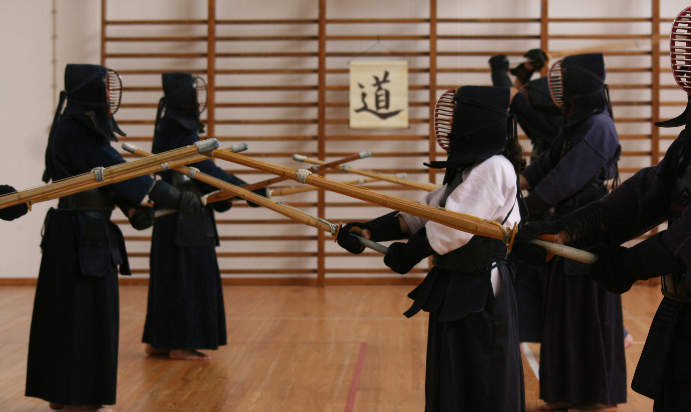

Kendo
Kendo significa literalmente “a via do sabre” e é uma das artes marciais mais respeitadas e populares do Japão.

A tradição dita que o Kendo foi desenvolvido no século XVIII por um conjunto de mestres espadachins, nomeadamente os Samurais Nakanishi Chuzo, Yamada Heizaemon Mitsunori e Naganuma Shirozaemon Kunisato, que adaptaram as técnicas do Kenjutsu, a forma mais tradicional de estudar o sabre japonês ou nihonto, e introduziram protetores primitivos, passando a utilizar o Shinai, i.e. a espada de bambu.
Desta forma desenvolveu-se uma prática mais segura, minimizando os riscos físicos associados à prática da esgrima tradicional com sabres maciços de madeira (bokken ou bokuto).
Já no Século XIX, o Samurai Chiba Shusaku Narimasa introduziu o Gekiken, i.e. os duelos com contato físico com base no uso do Shinai e do Bogu (armadura).
A moderna arte de Kendo é pois um refinamento e uma especialização das técnicas oriundas do Kenjutsu, que no entanto permanecem fiéis às tradições que estiveram na sua origem, respeitando e cultivando a sabedoria centenária, bem como os princípios tradicionais da esgrima japonesa.

A prática de kendo é aberta a todos, sem colocar restrições físicas de qualquer natureza, e tem como finalidade maior o cultivar de um espírito forte, indomável, calmo e confiante, capaz de fortalecer o caráter do Kendoka, i.e. do praticante de Kendo, através da disciplina, do espírito de sacrífico, da permanente auto-superação, do respeito e da etiqueta.
A prática de Kendo exige pois grande vigor e concentração, com base numa mente forte e lúcida, elevada eficiência técnica, apurada perceção, sentido estratégico, capacidade de tomar decisões rápidas e ajustadas, e uma noção exata da relação entre tempo e espaço.

O Kendo é praticado com base numa réplica do sabre, constituída por tiras de bambu, denominado de Shinai, que foi concebido especialmente para este efeito, i.e. para a prática do Kendo, onde o contato físico próprio das contendas ou treinos em pares, e com cariz desportivo, pode ser feito sem riscos maiores de lesões ou ferimentos graves.
Para além disto, o Kendoka estuda e treina também formas predefinidas ou Katas em pares usando sabres longos e curtos de madeira (Odachi e Kodachi), permitindo que dessa forma tome conhecimento das bases técnicas e conceitos originais do Kenjutsu, que está na base do Kendo moderno.
Para combate, i.e. duelos desportivos, o Kendoka usa proteções especiais, inspiradas nas armaduras medievais nipónicas, e que inclui proteção para a cabeça (Men), proteção para o tronco (Do), luvas protetivas para as mãos e pulsos (Kote) e proteção para o baixo abdómen (Tare).
O Kendo é assim uma viagem destinada ao desenvolvimento do Kendoka, promovendo a união e o equilíbrio entre o seu corpo e a sua mente, e permitindo que aplique os conceitos e as técnicas que lhe são transmitidas com base nos princípios do respeito, da cooperação e da correta interação com os demais praticantes.
O Kendo (ou esgrima moderna japonesa) é hoje, não apenas uma arte marcial centenária, mas sobretudo uma prática competitiva com elevado valor desportivo, apreciada por milhões de pessoais em todo o mundo, e globalmente reconhecida como uma forma excelente de desenvolver de forma harmoniosa e integrada, o corpo e a mente.
A prática é individual e em pares, em princípio é segura e aberta a todas as idades e condições físicas.